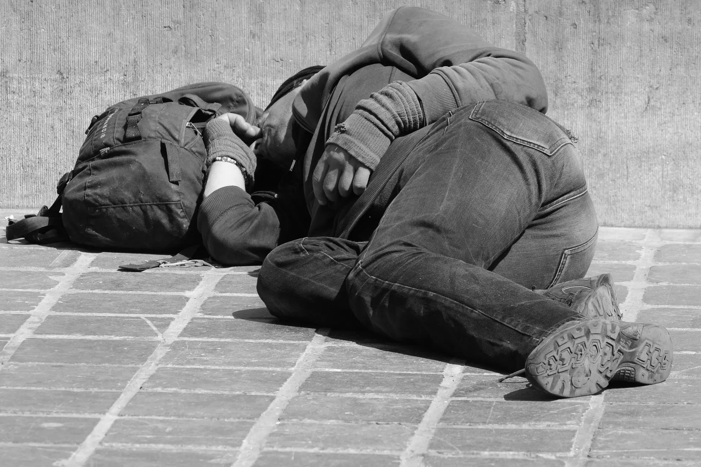
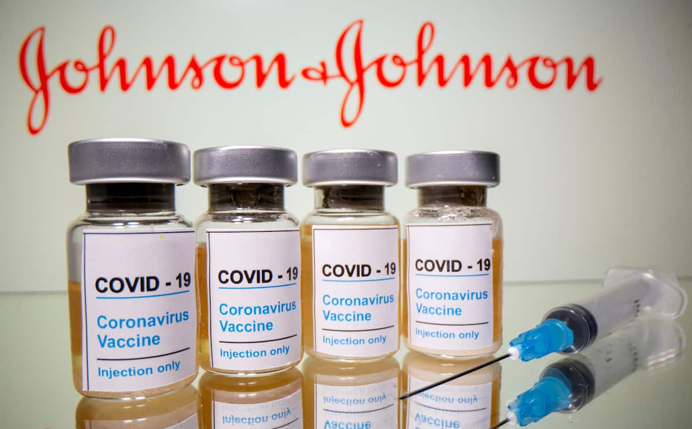

Annapolis
Helping the homeless: How Maryland is attempting to vaccinate one of its most vulnerable communities
BY TORI BERGEL - APRIL 26, 2021
On March 5, 2020, Maryland’s first three positive cases of COVID-19 were confirmed.
On March 30, 2020, Gov. Larry Hogan issued a stay-at-home order, keeping residents from work or school, and setting in motion a new normal for the state of pandemic-related anxiety to which the world is still accustomed.
On Dec. 11, the Food and Drug Administration approved administration of the first coronavirus vaccine in the U.S., developed by Pfizer-BioNTech.
This month, on April 6, over a year from when the pandemic began, Hogan announced that all Marylanders over the age of 16 were now eligible to receive a vaccine.

Photo from CBS Baltimore
While the news gave the state it’s first true glimpse at a possible return to normalcy, some of the most vulnerable communities are still struggling to gain access to that same hope.
Individuals experiencing homelessness are one such population, and are highlighted by the Centers for Disease Control and Prevention as a “particularly vulnerable group” for COVID-19.
The CDC’s website explains that, “Homeless services are often provided in congregate settings, which could facilitate the spread of infection.
Because many people experiencing homelessness are older adults or have underlying medical conditions, they may also be at increased risk for severe illness.”
“I think the pandemic has highlighted the extent to which a safe, stable place to stay is just so fundamental to health,” Kevin Lindamood, president and CEO of Health Care for the Homeless, told Capital News Service. “We as an organization have very much learned that housing is healthcare.”
The Department of Housing and Urban Development requires all Continuum of Care—the coordinating bodies working to address homelessness in each jurisdiction—to conduct annual point-in-time counts of their homeless populations on a given night within the last two weeks in January.
According to the Maryland Interagency Council on Homelessness, HUD uses these “snapshot” counts to help set funding throughout the country for institutions aiding those experiencing homelessness.
As of January of 2019, Maryland’s point-in-time homeless count was 6,561. The state has not yet released 2020 data, though the preliminary total is 6,302, according to the Maryland Department of Housing and Community Development.
HUD requires sheltered individuals be counted yearly, but unsheltered data is only required on odd-numbered years, so true counts may be higher.
“That count uses the narrowest of federal definitions, so it’s only those that are on the streets or in shelters. There are no fewer than five federal definitions of homelessness, and they don’t always agree with each other,” Lindamood said.
“Generally when you hear data about the numbers experiencing homelessness or you hear the national data, it’s using the HUD definition and it’s using a methodology, a point in time count, that’s really flawed. … I don’t think you can conclude how many people may experience homelessness over the course of a year by a count that takes place on one night…the actual number is likely much larger,” he added.
Health Care for the Homeless, a Baltimore-based organization aimed at ending homelessness, began limited vaccinations at the end of January, but since February, has been vaccinating individuals five days a week at increasing rates.
The organization has been vaccinating people out of their Fallsway clinic in downtown Baltimore, as well as through outreach programs at shelters and makeshift hotels-turned-shelters—something being done in many areas in order to provide much-needed housing while promoting social-distancing—in both the city and county. They have since administered over 2,000 doses — all Moderna except for 381 doses of the Johnson and Johnson—and vaccinated over 1,500 individuals fully.
“People experiencing homelessness are far likelier than their house counterparts to die prematurely. And so we knew from the beginning that we had to keep our doors open to basic primary care, and ensure that people could get the support that they needed. Then at the same time we needed to slow the spread, develop a testing capacity and now develop a vaccination capacity,” Lindamood said.
Baltimore’s preliminary 2020 point-in-time count is 2,193, the most in the state, according to the Maryland housing department.
“The real problem isn’t homelessness itself, that’s a symptom. The real problem is the kind of social structures that create it; the wages, unemployment, widening gap between the rich and the poor, lack of access to healthcare and other safety net services. We’re particularly concerned, as we’re going through this pandemic, with the number of people now that are at risk of eviction, and may at some point soon not have a regular place to stay,” Lindamood said.
Photo from Conduit Street - Maryland Association of Counties
In Montgomery County, the Department of Health and Human Services’ Services to End and Prevent Homelessness has recently begun vaccination efforts for it’s homeless population.
As of April 15, the department has put on two rounds of vaccination clinics targeted toward those experiencing homelessness: The first took place on March 9 at three of the county’s shelters where a total of 191 people received an injection, the other occurred on April 12, where an additional 83 individuals were vaccinated. A small number of shelter staff were among those who got the vaccine.
As to why it took so long for the county to begin dosing this population, Amanda Harris, chief of Services to End and Prevent Homelessness within the Montgomery County Department of Health and Human Services, said it’s largely a supply issue.
“We only have control of the vaccines that the health department receives,” Harris said. “The county was working through the different priority groups and so the delay was because we hadn’t reached that priority group yet.”
Much like in Montgomery County and the larger Baltimore area, in Anne Arundel, vaccination priority was given to those in shelters and hotels.
The county also works with community partners to put on community clinics as an additional means for vaccination.
“We set a date, there’s usually 100 vaccines allocated to each site, and we’re doing that six days a week at various locations,” said Tonii Gedin, the Deputy Health Officer of Public Health within the Anne Arundel County Department of Health.
The Department of Housing & Human Services, formerly or also known as the Frederick Community Action Agency, in Frederick County has offered vaccinations to those in attendance for meals at county soup kitchens, through street outreach and at the Alan P. Linton, Jr. Emergency Shelter operated by the Religious Coalition for Emergency Human Needs, according to Janet Jones, assistant director of medical services within the department.
As of April 15, the department has vaccinated 73 individuals.
Both Anne Arundel and Frederick counties began vaccinating their homeless populations in January.
“I think it’s important to have access to the vaccine for those folks, and also to provide the education…whether or not someone chooses to get the vaccine is their choice, but I think it’s more in terms of the access of being able to get it for underserved areas and underserved individuals, and that’s the key to the vaccination right now,” Jones said.
- Kevin Lindamood, president and CEO of Health Care for the Homeless
Access to the vaccine is particularly important because those experiencing homelessness are most often from marginalized communities. Both COVID-19 and homelessness disproportionately affect people of color.
According to the Maryland Interagency Council on Homelessness’ 2019 homlessness report, 57% of those experiencing homelessness in Maryland identify as African American—in comparison, as of July 1, 2019, only 31.1% of the state’s total population identified as Black or African American alone, according to the United States Census Bureau.
“For us, it’s really how can we ensure that people have access. And among those that we’re serving, the large majority of individuals that we serve are Black and Brown and other people of color, primarily African American and Latinx populations,” Lindamood said.
Recently, certain approved vaccines have come under investigation after incidents of recipients developing rare blood clots were reported.
The AstraZeneca vaccine co-created by Oxford University and Vaccitech, and largely used in EU affiliated countries, was the first to see problems.
According to a press release sent out by the Medicines and Healthcare products Regulatory Agency earlier this month, in the United Kingdom as of March 31, 79 cases of blood clots were reported to the agency resulting in 19 deaths. All of the issues occured after the first dose.
The majority of those who developed complications were younger women, and almost all of those affected were middle-aged or younger.
Many countries have halted or put age suggestions on the vaccine’s distribution—the Australian Technical Advisory Group on Immunisation recommended AstraZeneca not be used in those under 50, and the Joint Committee on Vaccination and Immunisation in the United Kingdom recommended the same for those under 30 without underlying conditions —while Denmark became the first country to halt it’s usage altogether.
In the U.S., cases of blood clots have also been linked to Johnson and Johnson’s Janssen vaccine.
The CDC and FDA suggested a “pause” on usage of the single-dose vaccine starting April 13 based on a preliminary suggestion from the CDC’s Advisory Committee on Immunization Practices while it investigated the issue further.
As of April 21, 15 instances of blood clots were confirmed out of the 7.98 million doses administered up to that point, according to the advisory committee.
All of the cases occurred in women—13 of whom were between the ages of 18 and 49, and 2 of whom were over 50. Three of the cases resulted in the individual’s death.
The CDC is currently looking into additional potential cases.
Given the extreme rarity of the clots, many health professionals have maintained that the benefits outweigh the risks.
“I am worried that this will only complicate overcoming hesitancy,” Harris said.
Photo from The Washington Post
Both rounds of clinics in Montgomery County used the Janssen vaccine. The department had halted it’s use after the pause was announced.
“I think it’s a game changer being able to have the single dose. Cause it’s been so hard to get people to just agree to get one dose, let alone two, so I think this will make a big difference,” Harris said.
She added that due to the transient nature of homelessness, a single-dose vaccine is easier to manage.
Though all three had also been using varying amounts of J&J, Lindamood, Gedin and Jones said they had all halted administration of the vaccine, but had kept operations going using only two-dose alternatives.
“Here’s the thing on J&J. We didn’t start with it. And the pause isn’t stopping our vaccination work,” Lindamood said at the time. “Is a single-dose vaccine helpful, desired by many, simpler to administer? Yes. Would it help us fully vaccinate more people at a faster pace? Sure. But has the pause stopped us from vaccinating? Not at all.”
On Friday, the FDA and the CDC lifted the pause on the Johnson & Johnson vaccine—however they advised that women under 50 “be aware” of the potential risk and the availability of other vaccines.
“Prioritizing populations experiencing homelessness is not just about altruism…it’s about broader public health, and ensuring that the most vulnerable among us, who can’t necessarily isolate at home, are vaccinated,” Lindamood said. “Let’s hope that one of the many lessons we’ve learned from a pandemic is that we need to do more to ensure that everyone has a safe and decent place to stay.
Average annual temperatures in Baltimore have gone up more than 3 degrees over the last century, nearly twice as much as the rest of the country.
And the planet’s warming has gained momentum, say researchers who estimate the number of very hot days in Baltimore could increase six-fold by the middle of the century.
More and more people, including Del. Robbyn Lewis, who represents parts of East Baltimore, are replacing the words “climate change” with stronger language.
Urban heat islands
Cities, crowded and paved over, already feel the impact of climate change, with poorer air quality and streets, highways and bridges damaged by storms. But certain neighborhoods will continue to feel the effects of extreme temperatures more than others.
Researchers at Portland State University in Oregon and the Science Museum of Virginia have mapped these areas, called urban heat islands, and data shows that temperatures here and in surrounding neighborhoods can run 8 degrees hotter than in communities that have more trees and less pavement.
McElderry Park, which despite its lyrical name offers little green space, is one of these: the hottest neighborhood in Baltimore, a city whose climate has long been classified as humid subtropical.
Residents in the hottest areas have higher rates of chronic illnesses affected by heat, including asthma and COPD. In hot weather, emergency medical calls for some chronic conditions increase. The rate of emergency medical calls for cardiac arrest and congestive heart failure, for example, nearly double when the heat index hits 103 degrees.
"When we talk about the environment,” Lewis said, “we’re talking about human health.”
The city’s hottest areas are poorer, which means the residents don’t have the resources to move out.
This is true across the United States. In a majority of the country's most populous cities, people with lower incomes typically lived in the hottest areas, an investigation by journalists from NPR and the University of Maryland found.
In short, as the planet warms, the urban poor in dozens of large U.S. cities will actually experience more heat than the wealthy, simply by virtue of where they live.

Photo by Sonia Hug | Wide Angle Youth Media
Sacoby Wilson, who studies applied environmental health as an associate professor at the University of Maryland School of Public Health, said people in low-income neighborhoods walk more, ride more buses and drive fewer cars — so they contribute less to climate change. And yet they are more vulnerable to dying in extreme heat.
“Environmental justice and climate change,” Wilson said, “are inextricably linked.”
The streets have fewer trees than those in more affluent communities. Rowhouses, Baltimore’s signature architecture, trap heat and stay hot even when the heat eases on summer nights. The houses are old, often poorly insulated and hard to maintain. Crime rates are higher, so many people won’t put an air-conditioning unit in a first-floor window for fear of break-ins.
The problems are not new. Many stem from historical segregationist zoning and lending policies that for decades limited where black citizens could live.
“We have to root ourselves in the reality that Baltimore for all this great history has a history of inequality and racism that we don’t like to talk about,” Baltimore City Council President Brandon M. Scott said.
The Code Red weekend
As July’s weather emergency bore down, Baltimore’s health department put out press releases advising citizens to drink water and cut back on outdoor activities. At a Thursday press conference warning of a 100-degree weekend, the mayor told Baltimoreans to stay inside until the weather broke Monday night.
Radio and television stations dutifully broadcast that the city opened cooling centers, where people could rest during the most intense heat. City health officials said the information was also available on its website.
But many East Baltimoreans said during the heat wave that they weren’t aware of any of City Hall’s plans or warnings. Many said they didn’t know cooling centers existed. They never looked at the website.
Inside the rowhouses, even those with an air-conditioning window unit, the heat simmered.
Reporters from the University of Maryland’s Howard Center for Investigative Journalism and Capital News Service placed sensors that record heat and humidity inside several homes in McElderry Park and nearby neighborhoods. Those sensors recorded temperatures that reached as high as 97 degrees and heat index values of 119 degrees.
In some homes, those readings showed that it was hotter inside than outside.
On the first floor of Tammy Jackson’s two-story rowhouse, the heat index registered 93 degrees at 10 p.m. on Sunday, July 21. Outside, the heat index was 9 degrees lower, 84 degrees.
Stephanie Pingley said she won’t let her three sons — 13, 11 and 7 — play outside the home she rents in the 500 block of her street. “Drugs in the 400 block,” she said. “Drugs and alcohol in the 600 block.”
A sensor inside a bedroom showed that the heat index during the heat wave was consistently higher inside than outside Pingley’s house.
Still, she said an air conditioner in the kitchen provides enough relief for the family during the day. She would rather stay home with the shades drawn against the heat than walk her children a mile to a cooling center.
Security concerns
Solomon Simmons, 70, and his neighbor Harriett Alexander said McElderry Park used to be more tightknit — “like a village,” Simmons said.
Public health studies have shown that without community cohesion, residents are at more risk when temperatures soar. Baltimore health officials say that isolation is always a danger to health.

Solomon Simmons in his East Baltimore home (Photo by Amina Lampkin | University of Maryland)
Today, Simmons said, many of his old neighbors have died. Only about four people remain from the group of homeowners his mother met when she moved to McElderry Park in the 1980s.
“Pride is gone,” he said.
He will not put an air-conditioning unit in a first-floor window facing the street “because of security.” He has air conditioning in his bedroom, but he’s mindful that using it costs money.
“One of the things that does concern me is that my electric bill will probably be a lot more just trying to stay cool.”
He said he didn’t know about cooling centers but would rather take an air-conditioned drive or go to the movies than sit in a cooling center.
Alexander, retired from Armco Steel and the Baltimore school system, follows the old Baltimore practice of scrubbing her rowhouse’s white marble steps often. She used to scrub the steps of neighbors’ houses as well. “It’s important to me,” she said. “This is where I live.”

Harriett Alexander, with her dog, Shakur, doesn’t like using her air conditioner because she might not hear someone breaking into her house. (Photo by Maris Medina | University of Maryland)
She tends large pots of hostas and lilies that bloom next to her rowhouse steps, and on summer days she sits in the shade of a mature sidewalk tree and chats with neighbors. She has air conditioning in her second-floor bedroom but doesn’t like using it because she fears she wouldn’t hear if anyone was breaking into her house.
“I don’t think it safe to live in a house with an air conditioner running, drowning out everything else,” Alexander said. “You don’t know someone’s in your house until they’re in your room.”
But especially for children, older residents and people coping with chronic diseases, air conditioning is the answer.
Tammy Jackson, who has asthma, said she had to stop cooking dinner one July evening when the heat made it hard for her to breathe. The next day, she told her husband, “Baby, I can’t cook until I get AC.”
Even if someone from McElderry Park decided to find a cooling center, some centers were closed on the weekend. The closest center open Saturday and Sunday was about a mile away — a long walk for the young or the old in 100-degree heat.
Jennifer Martin, Baltimore's deputy health commissioner for population health and disease prevention, said she was “sad and surprised” to hear so many people were unaware of the cooling centers.
By the end of July, the health department had declared 12 Code Red days this year, and the department counted 2,454 people who had visited cooling centers.
Martin said the health department is working with community groups to find places in addition to city-owned buildings — maybe churches or community associations — where residents could find a place with air conditioning. Those would offer relief closer to home.
Scott, the City Council president, said that cooling centers are fine but may not be the answer for everyone. “We have to understand the culture of the neighborhood. Some people are not going to want to be leaving their homes to get cool,” he said.
Lewis said, “We wouldn’t need cooling centers if we had healthy neighborhoods.”
Heading off catastrophe
Twenty people have died of heat-related illnesses in Maryland so far this year, three of them in Baltimore, according to state data through Aug. 28.
From July 16 through July 22, when the heat wave broke, 47 people went to emergency rooms when the heat aggravated chronic conditions such as heart disease, diabetes or lung problems.
Yet it could have been worse. Heat catastrophes are not theoretical. In Chicago in 1995, more than 700 people died during a five-day heat wave.
And summer heat will get more extreme. With every year, researchers warn, temperatures will soar higher and the heat waves will last longer — putting more pressure on city governments to help residents cope.
Historically, the Baltimore area has averaged about six days a year when the heat index exceeded 100 degrees, according to new research from the Union of Concerned Scientists and the University of Idaho.
If no action is taken to reduce carbon emissions, by mid-century that figure will rise to more than 37 days annually, according to the researchers. The study defines mid-century as starting in 17 years.
By the end of the century, as a baby born today becomes a senior citizen, there will be 65 days with a heat index of 100 degrees or higher, the researchers projected. That’s about the same number as McAllen, Texas, a city that abuts the Mexican border.
Peter Beilenson, Baltimore’s health commissioner from 1992 to 2005, now the health services director of Sacramento County, California, said health departments could use different strategies to deal with extreme heat.
Public health workers could be redirected during heat waves to knock on doors of people who are most vulnerable to heat, he said. That would allow workers to hand out information on cooling centers and give them a chance to assess whether the resident needs to go to the emergency room.
The Baltimore health department has done this to deal with other problems, Beilenson said — for example, to check on tuberculosis patients or alert residents to the dangers of lead paint.
Candidates for office have long used data that tells them which doors to knock on to meet potential voters. Health workers, Beilenson said, could use data to find the most vulnerable during heat waves.
Martin said the health commissioner had recorded a call warning of the heat that was sent to older people who have used the city's services for aging. But during the 100-degree Code Red emergency, Martin said, the health department did not send teams into neighborhoods.
“Being able to identify vulnerable areas [where people are especially endangered by heat] is very challenging,” she said. Also, “in a heat wave, everyone is at risk, including people who knock on doors.”
Trees help with heat
When Baltimore officials are asked how the city is preparing for the more extreme temperatures ahead, several people point to the efforts by City Hall and volunteer groups to plant more trees. Citywide, the tree canopy in 2015 was 28%, up from 27% in 2007.
In 2015, many East Baltimore neighborhoods had a tree canopy of about 10%, according to a Howard Center analysis of tree canopy data gathered by researchers at the U.S. Forest Service and the University of Vermont Spatial Analysis Lab. Many blocks had no trees at all.
Some city officials resist questions about where climate change falls on the list of government priorities when City Hall has to deal with poverty, crime, police corruption, poor schools and crumbling infrastructure.
“I don’t like to rank things,” said Scott, the City Council president. “For me, when you’re thinking about issues like heat, that’s connected to safety. It’s all interconnected. We need to stop thinking in silos.”
He acknowledges that “trees and climate change were not a high priority for mayors and council members of Baltimore’s past.”
The question, said Scott, who is expected to be a mayoral candidate next year, is “how can we evolve and get more innovative about this discussion?”
At the end of July, Scott released an agenda with 26 priorities for the coming council year. Climate change was not among them.
Rowhouses in the heat
Rowhouses efficiently conserve heat — which is welcome in the winter, a problem in the summer.
On a hot summer day, Melissa Canady walked through the alley behind her rowhouse. The backyard is concrete, poured by a previous owner to create a space that could be cleaned by a broom. Concrete blocks form low walls that separate each yard.
“The neighborhood’s so closed in,” she said. “There are so many houses. There’s no air flow. If there was some way you could get some air into the community.”

Melissa Canady says that the concrete block walls in her backyard prevent the flow of air and trap heat behind her house. (Photo by Maris Medina | University of Maryland)
Her backyard looks out onto a patch of green, the Amazing Port Street commons, a block of green space cared for by Amazing Grace Lutheran Church and created when a row of vacant houses was razed. The neighbors sometimes use it for events such as community cookouts.
It’s the largest green space for blocks. But some neighbors said they are reluctant to walk their dogs there for fear they will step on syringes discarded by people who use drugs.
Coping with the heat
As temperatures in Baltimore reached 100 on July 20, most everyone around the city was staying inside. Some of the people on the streets walked under open umbrellas, carrying their own circle of shade. Men wore damp cloths draped under their caps or on the backs of their necks. No one was moving quickly.
Few people were on the street. “This is the quietest the block ever been,” Tammy Jackson said. “I can’t believe it.”
But city life continued despite the heat. A team of paramedics was called to an East Baltimore block when a resident found a man she didn’t know passed out on her front steps.
The paramedics revived the man, who apparently had overdosed, with a dose of Narcan. He stood up and wandered off, rejecting advice he go to the hospital.
One of the paramedics, holding a bottle of water, stood on the sidewalk and surveyed the quiet street. Everyone walking around on that scorching afternoon was dehydrated, one paramedic observed. Everyone. Keeping enough fluids in the body is difficult in temperatures so extreme.
A little earlier that day, David Brown, 68, sat a few blocks away waiting for a bus. He said he didn’t mind the heat.
And what will he do in future summers, as the heat becomes more extreme?
“Accept it,” he said.
Jake Gluck, Jane Gerard, Roxanne Ready, Theresa Diffendal and Sean Mussenden of the University of Maryland contributed to this story. Additional information was also provided by Sean McMinn, Meg Anderson and Nora Eckert of NPR.